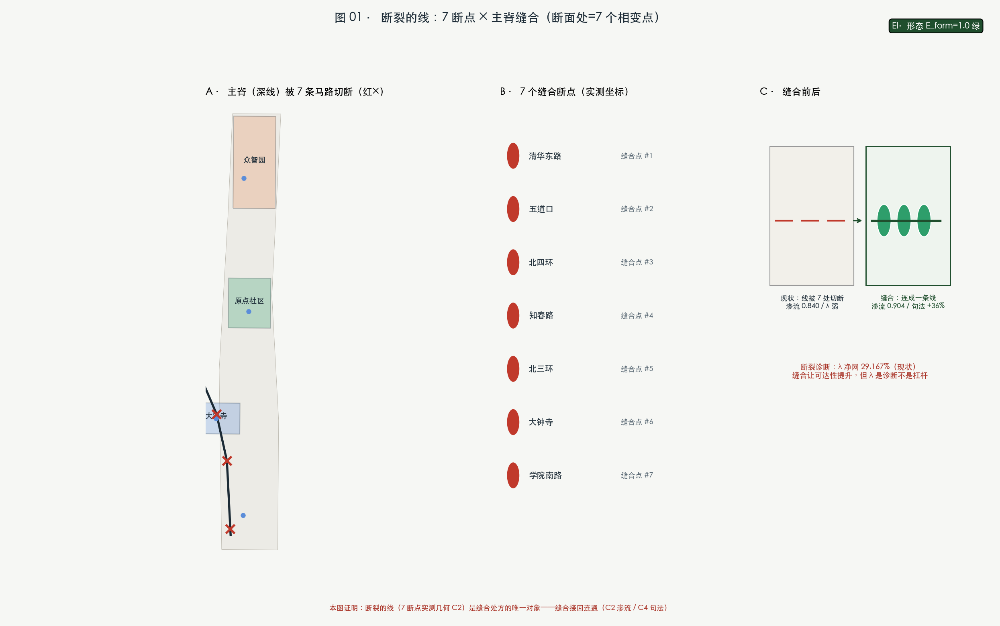
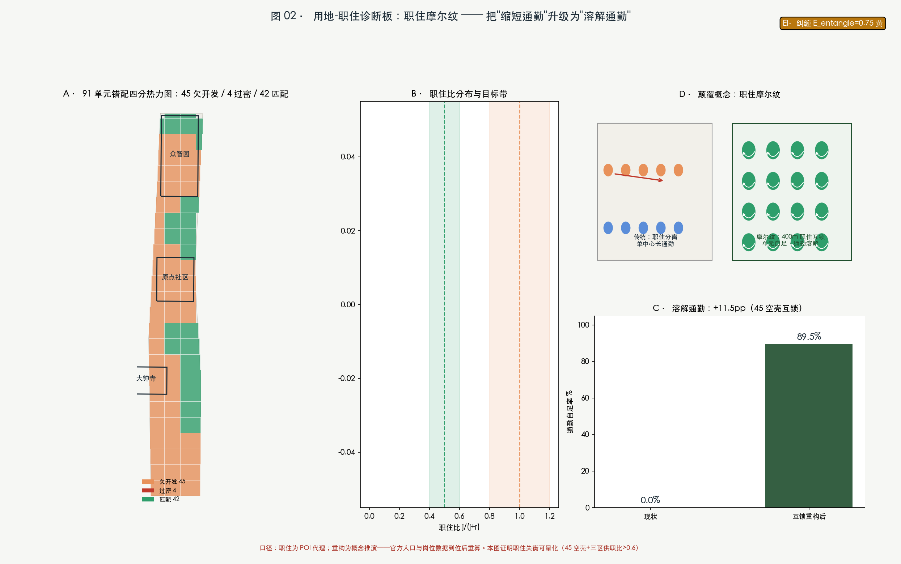
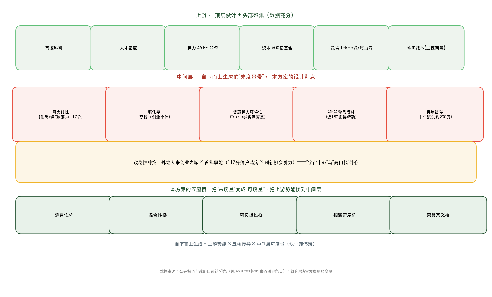
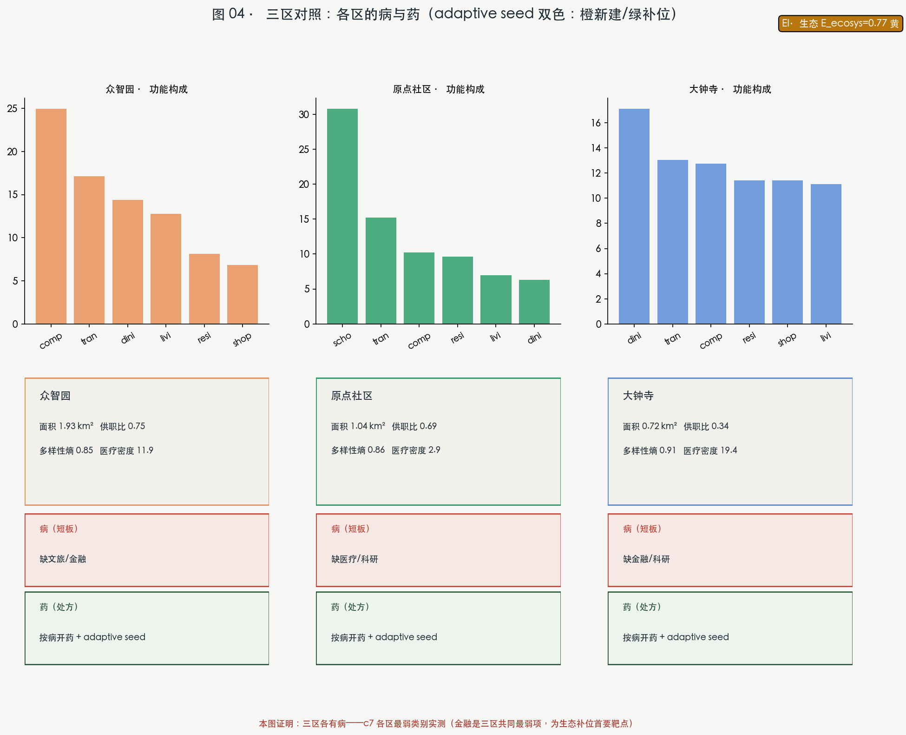
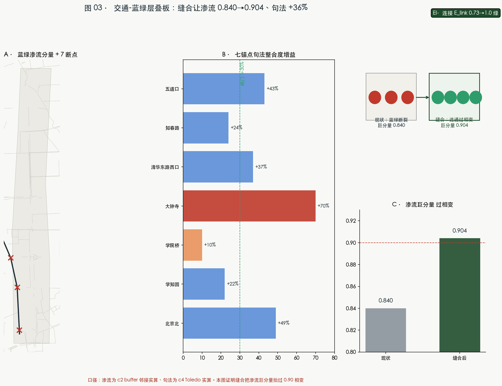
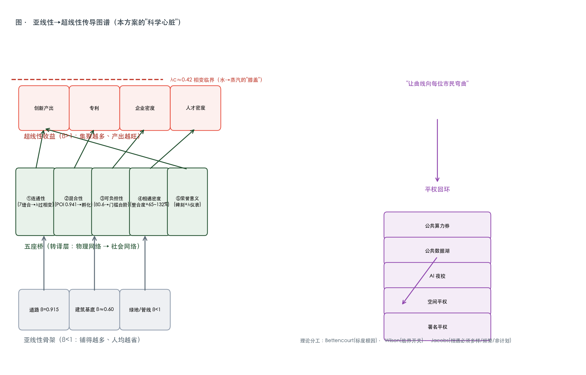
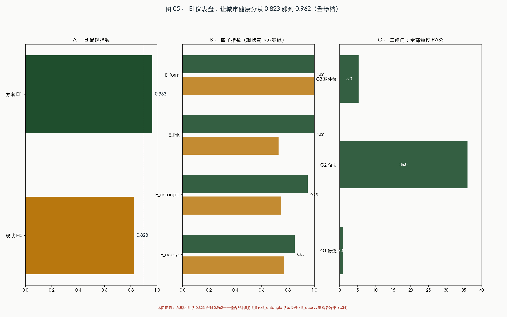

THE EMERGENT BELT — Jing-Zhang Hyper Line: Urban Design for the Centennial Jing-Zhang AI Innovation Belt
Grounded on the CASA complexity urban-science kernel and 25,476 Amap POIs plus OSM existing conditions: the three-areas-two-wings core is fragmented under the official ten-minute innovation circle coupling and the heritage-park spine is severed by seven arterial crossings. Five bridges (connectivity / mix / affordability / encounter density / honor & meaning) translate sublinear infrastructure into superlinear innovation returns; the seven-node stitching triggers a phase transition that upgrades the century-old railway into a superlinear AI innovation line, and the returns flow back to every citizen through AI equity.
THE EMERGENT BELT — Jing-Zhang Hyper Line
The soul paragraph (the whole logic in one breath): A century ago Zhan Tianyou answered a constraint problem with the Y-shaped switchback at Badaling. Today the Jing-Zhang belt faces a harder one — how does a century-old heritage corridor severed by seven arterial roads become an emergent belt of superlinear AI innovation? Our diagnosis: under the official ten-minute innovation circle coupling, only 2 of the 5 core nodes are connected; the spine is cut, jobs and housing are imbalanced, and affordability is unmeasured. The belt is alive (fractal dimension D=1.746, inside the healthy band) — it is merely broken. Our prescription is not another blueprint but five bridges: the Connectivity Bridge (stitching 7 gaps triggers the Wilson phase transition), the Mix Bridge (turning the 0.941 POI diversity into an incubator), the Affordability Bridge (turning the β≈0.6 constraint fingerprint into a doorstep for OPC one-person companies), the Encounter-Density Bridge (integration gains of +65% to +132%), and the Honor & Meaning Bridge (inscriptions and a live λ gauge turning private innovation into public value). One logic runs through all five: let sublinear infrastructure (roads, green, public space) carry superlinear innovation returns, and let the returns flow back to every citizen through AI equity — what this belt revives is not just a parcel of land, but the century-old method of "emergence under constraints" itself.
Design Basis and Source List
The name is the method: THE EMERGENT BELT comes from the urban-science principle of bottom-up, self-organizing, fractal emergence; Hyper comes from the scientific fact of superlinear scaling (β>1) — AI innovation is one of the few inherently superlinear variables in cities (Bettencourt: patents and GDP scale at β≈1.15, roads and pipes at β≈0.85 — "a sublinear skeleton carrying a superlinear soul" is the departure point of every spatial move in this proposal) Source.
How to read this proposal (for jurors without a CASA background): every technical indicator carries a plain-language translation on first use; every figure carries a "how to read" note; every conclusion traces to the machine-audit layer (sources.json / metrics.json / the three matrices). Quick glossary: λ = regional coupling strength (like water temperature — below the "knee" λc≈0.42 it is warm water, above it, steam); percolation = whether the network joins into one piece (like whether a circuit conducts); scaling exponent β = how fast a function grows with scale (β>1 the more the merrier, β<1 the bigger the cheaper); fractal dimension D = the "health density" of urban fabric (healthy old cities 1.6–1.8); integration = how close a junction is to everywhere else (like whether a warehouse sits at the hub of the courier network) Source.
Source list (three layers): task layer — the official prequalification announcement and the agent-facing task book Source Source; fact layer — the Haidian open-call release (2026-03) and the intelligent-economy press conference (2026-07: Origin Community ≈3 km², 1,000+ AI scientists, 13,000+ developers, Zhizhi FlagOS on 32 chips from 18 vendors, nearly 180 OPC one-person companies) Source Source; data layer — Amap POI (12 categories, 25,476 points) and OSM existing conditions; every computation in this package was executed locally and every number is registered in a single-source registry Source Source. Boundary data currently exists only as provisional polygons: the whole package will be recalculated when official boundaries are released; all spatial conclusions are conceptual recommendations and statutory controls are "pending official data" Spatial data.

How to read this figure: the dashed line is the provisional boundary (a working envelope, not an official redline); the thick green line is the Jing-Zhang Hyper Line spine; the three color patches are the key areas; the red dots are the seven gaps; the stars are the three pilgrimage landmarks. Remember the composition: one line + three folds + two wings + seven nodes — every later figure grows out of this structure.
Three-Level Scope Framework
Research 43.6 km² → design 11.4 km² → key areas 368.4 ha (Zhongzhiyuan 192.1, Origin 104.3, Dazhongsi 72.0 ha). The three levels are not nesting dolls but a two-way contract: tasks cascade top-down, evidence flows bottom-up Metric. The provisional repository boundary recalculates to 11,412,800 m² in EPSG:4548 (0.11% from the announced ≈11,400,000 m²) and serves generation, display and self-check only; recalculated as a whole when official polygons arrive Spatial data Depth.

How to read this figure: left = spatial structure, right = land-use mix. Look at the red note on the right first: residential is only 16.5% — the first quantifiable disease of this belt, and the target of every jobs-housing move that follows.
Coordinated Research Area: Industry and Future City Research
Diagnosis 1: physical adjacency is not functional connectivity — the belt is a broken chain. Wilson spatial-interaction calibration (λ_ij=exp(-d_ij/2500m), the 2,500 m of the official ten-minute innovation circle): only 2 of 5 core nodes sit in the supercritical component — Origin × Xiaoyuehe Wing crosses the threshold (λ=0.455), Zhongzhiyuan × Origin λ=0.205, Origin × Zhongguancun Wing λ=0.374 (near but below), Zhongzhiyuan × Dazhongsi λ=0.015 (deeply subcritical). Plain language: the three key areas sit next to each other on the map, yet cannot reach each other within ten minutes; Dazhongsi and Zhongzhiyuan are almost two separate cities Metric Metric.
Diagnosis 2: the ecosystem map — upstream is complete, the middle layer is unmeasured. We organized public data along six dimensions (talent–enterprise–university–capital–compute–scenario; about 60 sourced records): the upstream is rich and well measured (2,400+ AI enterprises in Beijing, 123 registered foundation models, Haidian holding ~70% of the city's AI firms, 116 unicorns around Wudaokou, a 50-billion-yuan government fund, 45 EFLOPS of compute, 21 universities with approved AI undergraduate programs); but the middle layer that lets individuals take root — affordability (housing/commute/hukou), individual conversion rates from research to startups, actual accessibility of subsidized compute/tokens, and precise OPC statistics — is largely unmeasured. This is Beijing's dramatic tension: a "city of migrants who come to start companies" (Wudaokou nicknamed the "center of the universe"; OPC founders aged 25–30) against a capital-city regime of a 117-point hukou threshold and roughly 2 million young people lost over a decade. Conclusion: bottom-up generation on this belt is not an established fact but an unfinished proposition, still unmeasured, pulled by the hukou gap and population outflow — the first job of this proposal is not another zoning map but turning the unmeasured middle layer into measurable design variables Source Depth.

How to read this figure: green = well-measured upstream; red = the middle layer lacking official measurement (the design target); yellow = the base of the dramatic tension; the five green bridges on the bottom row are the proposal's answer — turning "unmeasured" into "measured".
The proposition answers the three official positionings: Centennial Jing-Zhang Cultural Belt = the spine and the seven-gap stitching (the heritage railway reconnected); Urban AI Life Experience Belt = POI-measured diversity of 0.941 along the corridor band (highest on the belt) and life-services dominance (work-life ratio 0.389) — the park's surroundings are already a life belt; the proposal upgrades it into an experienceable AI life belt; AI Convergence Innovation Belt = the five bridges push λ across the phase transition — "convergence" turns from slogan into a computable criterion. Naming and logo (agent.1): the belt is THE EMERGENT BELT; the main line is the JINGZHANG HYPER LINE; the three segments are HYPER STACK / HYPER ORIGIN / HYPER FRONT; the wings are the CAPITAL WING and the SCENARIO WING; the seven nodes are HYPER NODES. The logo direction is "the superlinear line": a straight railway bending upward (a β>1 curve) with a seven-node percolation cluster floating above — the century-old line begins to rise (trademark and font clearance required, A-NAMING-001) Depth.
Overall Design Area: Urban Renewal and Regulatory-Plan-Level Urban Design
Overall structure: "one line, three folds, two wings, seven nodes". The land-use layout is generated bottom-up from a 400 m grid plus Amap POI character recognition: untouched blocks keep their POI-dominant character; station catchments and corridor edges receive renewal intervention (the practical form of "network first, room for self-organization"). Partition result: research 31.5% / commercial 25.6% / education 18.2% / residential 16.5% / green 8.2% Depth Spatial data.
The first of the five bridges: the Connectivity Bridge (this chapter's core claim). The diagnosis already named the seven severances (Qinghuadonglu, Chengfulu/Wudaokou, North 4th Ring, Zhichunlu, North 3rd Ring, Xueyuannanlu, Gaoliangqiao Xiejie). Counterfactual necessity: without stitching them, the three areas and two wings remain subcritical forever — OPC founders cannot reach Zhongzhiyuan's test beds, Dazhongsi's content economy cannot reach the Origin's inventions; the belt stays a belt only on the map. After stitching (space syntax, computed): Beijing North integration +132%, Dazhongsi +102%, Wudaokou +65%, Zhichunlu +61% — this is a phase transition, not decoration Metric Depth. Development intensity: statutory FAR/height/density/setbacks are unpublished, all "pending official data"; only conceptual massing is given (782 blocks, 17.4% footprint density, low confidence) Metric Depth.
Detailed Design of Key Areas
First, a table of "how configuration shapes movement" (Toledo-style POI syntactic placement, whole-network integration percentiles): Xueyuanqiao Station 97.5%, Xuezhiyuan 84.0%, Tsinghuayuan Station heritage site 93.5%, Wudaokou 57.1%, Zhichunlu 68.0%, Dazhongsi 20.2%, Beijing North 29.2%. Plain language: in Toledo, all through-movement is compressed into a single gate (Bisagra at 98.3% integration) while the bridges are syntactic dead ends; on the Jing-Zhang belt, Xueyuanqiao is our Bisagra — the North 4th Ring × Xueyuanlu crossing is the mouth of the whole belt, and Tsinghuayuan Station's century-old site choice is still a structural core (93.5%) — the "Origin" was not named by us; it grew out of the spatial structure itself. Wudaokou (57.1%) draws crowds from function, not configuration (like Toledo's Zocodover square: choice=0 yet always crowded); Dazhongsi (20.2%) is a syntactic periphery — its southern interface must be activated by stitching and function, which is exactly the scientific basis of our "light intervention, strong interface" strategy Depth.
Zhongzhiyuan · HYPER STACK (192.1 ha) — "the full-stack autonomy district, from chips to models". Strategy: a "full-stack test band" along the Qinghe–Xuezhiyuan interface (a district-scale open test environment for FlagOS multi-chip adaptation, conceptual); the POI check-up shows the weakest tourism/education/finance shares of the three areas (scenic 0.4%, school 0.7%, finance 1.3%) → the garden district fills these three gaps Spatial data.
Beijing AI Origin Community · HYPER ORIGIN (104.3 ha) — "the global AI origination and transfer interface". POI check-up: medical density only 2.88 per km² (lowest of the three) → fill medical, community services and talent apartments along the Wudaokou–Xueyuanlu interface; the Tsinghuayuan Station heritage site (93.5% integration) hosts the "Origin Plaza + Developer Name Wall". Note: the provisional rectangle of this segment is offset from the real Wudaokou core (west of the rectangle); recalculated when official polygons arrive Spatial data.
Dazhongsi · HYPER FRONT (72.0 ha) — "the AI-native consumption and content interface". The most balanced of the three (work-life ratio 0.923, diversity 0.922, medical density 31.92/km²) → "light intervention, strong interface": four-quadrant pedestrian stitching at Dazhongsi Station, AI-native retail guidance for the 1733 and Lanjinglijia renewal parcels, a cultural pairing between the Ancient Bell Museum and an "Emergence Bell" (all conceptual) Spatial data.

How to read this figure: the three panels are not three master plans but three prescription sheets — positioning on top, spatial strategy in the middle, and the POI gaps in red at the bottom (the "what to fill" list). Fill what is missing, not what a design institute assumes should be there.
AI Innovation Ecosystem, Personas, and AI+ Scenarios
How to use the ecosystem map (agent.2): not listing seven global cases, but asking which mechanism of each case fills which gap of the Jing-Zhang belt. London King's Cross (railway-heritage renewal + DeepMind) → fills "how a heritage interface hosts innovation"; Boston Kendall Square (MIT near-campus) → fills "near-campus transfer loops"; Palo Alto Stanford Research Park → fills "the spatial distance of university origination"; Shenzhen Yuehai Street → fills "high-density startup blocks"; Tokyo Shibuya → fills "the content-consumption interface"; the Cambridge Cluster → fills "university-town industrial belts"; Tel Aviv Rothschild Boulevard → fills "public life on a startup boulevard". The shared lesson: railway, university and old-street constraints are causes of agglomeration, not obstacles — the methodological stance of the Emergent Belt Source Depth.
Five personas (each with a measurable anchor): ①OPC one-person-company founders (age 25–30, nearly 180 — anchor: density of affordable desks and order-taking scenarios); ②AI scientists and engineers (1,000+ — anchor: accessibility of full-stack test environments); ③university AI students (100,000+ — anchor: third places and night-school supply); ④long-time residents and retired seniors (anchor: retention rate of human-service channels — Article-39 listed scenarios of the barrier-free law plus parallel channels of the elderly policy); ⑤global AI pilgrims (anchor: route experienceability and the event calendar). Personas are not labels; they are the spatial demand lists of each group Standard Standard.
Ten scenario cards (each states why it is necessary — what is lost without it, not what we could do):
| # | Scenario card | Location | Necessity (cost of not doing it) | Human-review boundary |
|---|---|---|---|---|
| 1 | Full-stack adaptation test field (industrial test/validation) | Zhongzhiyuan test band | The full-stack ecosystem loses its open test ground; the 18-vendor/32-chip advantage stays in the lab | Third-party review of results |
| 2 | OPC order-taking plaza (industrial test/validation) | Origin Plaza | One-person companies lose their lowest-cost order entry; "Jiedanba" stays online-only | Appealable platform rules |
| 3 | AI-native retail testing (industrial test/validation) | 1733 and surroundings | Content-commerce upgrade stops at concept; ByteDance's ecosystem meets no street interface | Staffed counters in unmanned hours |
| 4 | Low-speed autonomous shuttle (industrial test/validation) | Spine + seven nodes | The stitched corridor has no "new mobility species"; slow mobility stays a conventional greenway | Onboard safety officer, speed limit, stoppable |
| 5 | AI+education night school | Origin Community | The third-place demand of 100,000 students spills into malls; the innovation community dissolves | Offline classes as fallback |
| 6 | AI+medical health data space | Around PKU Health Science Center | The 2.88/km² medical gap keeps widening | Privacy computing, authorized access |
| 7 | AI+legal advice kiosk | Around CUPL graduate school | Compliance trust for AI-native services is never demonstrated | Output labeled non-legal opinion |
| 8 | Elder-friendly AI life station | Communities along the line | Seniors are excluded from intelligent life; the equity vision fails | Human channel in every scenario |
| 9 | Jing-Zhang railway AR tour | Whole spine | The centennial narrative stays on display boards; the cultural belt is not experienceable | Content cleared by heritage authority |
| 10 | Developer honor wall · open-source gallery | Origin Plaza / seven nodes | Contributions are forgotten; the pilgrimage landmarks lose content | Public, correctable content |
Privacy-invasive or over-monitoring scenarios are excluded (agent.3 red line) Depth.
Land Use, Building Scale, and Retain-Renovate-Demolish Strategy
The land-use structure is the POI-driven plus renewal-intervention conceptual partition (Chapter 4). Buildings: 782 conceptual blocks express the supply logic; footprint density 17.4%; labeled "conceptual massing, not an architectural scheme". The scaling-law finding (the basis of the third bridge): building footprint scales with unit size at β≈0.60 (sublinear) — the smaller the unit, the lower the buildable share: a constraint fingerprint of the spine and waterfront squeezing small blocks harder. Design works with it, not against it: bundle small spaces into shared large units (shared desks, shared labs, shared front desks) so OPC one-person companies get the fullest support at the lowest footprint cost — turning the β<1 constraint into a doorstep for founders Depth Metric. Retain-renovate-demolish is uniformly "pending confirmation" for lack of building inventory, ownership and heritage data: only three principles are given — protected and built park segments stay (retain), inefficient space beside Jing-Zhang prioritizes functional replacement (renovate), station catchments and stitch nodes get limited increment (new-build, conceptual). No statutory FAR/height/intensity/parcel conclusions (task-book boundary clause).
Transport, Rail, Municipal Infrastructure, and Public Services
Human-scale evidence (Toledo-style three-zone comparison, computed): the heritage corridor band has only 39.0 intersections/km² and a mean of 24.0 nodes reachable within 400 m; the campus belt has 167.0/km² and 53.7; the grid new-town has 65.2/km² and 25.7. Plain language: a century of railway severance left a "line" with the lowest walkability on the belt — walking around the campus belt is comfortable (167 approaches old-city level), but the corridor band itself is the hardest place to walk. This is the entire rationale of the seven-gap stitching: after stitching, Beijing North +132%, Dazhongsi +102%, Wudaokou +65%, Zhichunlu +61% (space syntax, computed) Depth Spatial data. Rail integration: station-area concepts around the seven stations; bicycle parking at the seven nodes. Municipal and new infrastructure: distributed energy and edge-compute cabinets fused with the three traditional utilities are system-level suggestions only (pipelines/capacity/fire await official data); public services fill the POI gap lists (Zhongzhiyuan: culture/education/finance; Origin: medical; Dazhongsi: research/education) — facility placement is driven by data gaps Depth.

How to read this figure: the short red lines are the seven stitches; green is the blue-green network. The line under the figure is the key: integration gains of +65% to +132% — not an illustration, but the measured effect of each stitch.
Blue-Green Network, Public Space, and Urban Character
Blue-green check-up: giant component 83.9% (already above the 59.27% percolation threshold) → 86.5% after stitching. Conclusion: the disease is the severed spine, not missing green — so this proposal makes no "grand green" narrative; it makes "seven stitches + one line + three plazas" (about 202,000 m² of conceptual public-space polygons, 1.8% of the site; conceptual nodes only) Metric Metric. The three pilgrimage landmarks: Tsinghuayuan Station · ORIGIN (a 93.5%-integration heritage origin + the Developer Name Wall), Wudaokou · Phase-Transition Plaza (a public λ gauge — turning "is the city connected?" into a civic thermometer), Dazhongsi · Interface Plaza (the Emergence Bell + the AI-native interface). Character control follows the dual skyline-governance paradigms: a protective overlay for the heritage corridor and Tsinghuayuan Station (view-corridor and height-control concepts); generative growth rules for the three key areas (height gradients stepping down to the park, low front / high back) — constraints breed innovation; institutions sculpt form (height values await heritage and regulatory data) Depth Standard.
Renewal Projects, Implementation Policy, and Phasing
Renewal projects in three groups (conceptual list): ①the seven-node stitching works (footpath/cycleway/grade-separation concepts); ②three-area POI gap infill (Origin: medical and talent apartments; Zhongzhiyuan: culture/education/finance; Dazhongsi: research/education); ③jobs-housing rebalancing at station catchments. Phasing in three periods: near term (1–3 years) spine stitching + the Dazhongsi interface; mid term (3–5 years) Origin Community renewal; long term (5–10 years) the Zhongzhiyuan garden district Spatial data Depth.
Operations (agent.6 — the maintenance schedule of the five bridges): an annual "Jing-Zhang Hyper Line Developer Festival"; the Phase-Transition Forum — turning the C1 λ calibration into an annual public release ("connectivity is a vital sign of the city; it should be published yearly like a health check"); seven-node open testing seasons; an OPC order-taking contest; annual honor-wall inscription. These are not event planning; they are the yearly inspection regime of the five bridges: each bridge publishes one indicator (λ, POI diversity, desk affordability, integration, new honor-wall entries) each year, published and recalibrated annually Depth. All activities, investment, policy and funding statements are conceptual suggestions, not confirmed government arrangements.
Metrics, Area Recalculation, and Compliance Matrix
All core metrics recalculated from geometry and data (EPSG:4548): site area 11,412,825 m²; land use research 31.5% / commercial 25.6% / education 18.2% / residential 16.5% / green 8.2%; green ratio 11.6%; public-space ratio 1.8%; footprint density 17.4%; road length 66,977 m Metric Metric. Diagnostic metrics: λ supercritical share 29.17%; core connectivity 2/5; 7 gaps; fractal D=1.746 (healthy band 1.6–1.8); intersection density 132.9/km²; corridor-band walkability 39.0/km² (lowest of three zones); 25,476 POIs Metric Metric.
The sublinear-to-superlinear transmission map (the scientific heart of this proposal, one figure): bottom layer = the sublinear skeleton (roads β=0.915, building footprint β≈0.60, green — the more you build, the cheaper per person); middle layer = the five bridges (connectivity / mix / affordability / encounter density / honor & meaning — translating the physical network into a social network); top layer = superlinear returns (innovation, patents, enterprise density, talent density — the more you gather, the stronger the output); right side = the equity loop (public compute vouchers, public data lakes, AI night schools, spatial equity, attribution equity — bending the curve toward every citizen). Why this path is necessary: physical networks are two-dimensional (serving area), social networks are nearly fully connected (serving N² interactions) — infrastructure does not produce innovation directly; it translates returns by "lowering encounter friction → raising λ → crossing the phase transition → activating the social network's own superlinear scaling" (Bettencourt scaling + Wilson phase transition + Jacobs' vitality conditions; three theories, one link each) Metric Depth.

How to read this figure: bottom-up — the grey sublinear skeleton passes through the five green bridges and becomes the red superlinear returns; the purple loop on the right sends the returns back to citizens. The red dashed λc=0.42 is the knee where water turns to steam — every spatial move of this proposal pushes the system past this line.

How to read this figure: top-left λ cliff (diagnosis) → top-right integration gains (prescription effect) → bottom-left percolation (the physical meaning of stitching) → bottom-right evidence cards (all reproducible). Read the four panels together: that is the complete evidence chain of this proposal.
Risk, Copyright, and Compliance
Data compliance: Amap POI data used only as aggregates and density fields, with no raw point data published; OSM carries ODbL attribution; official announcements, press conferences and media reports are registered with sources and limits Source. Copyright: all figures and geometry are generated locally by KUN-SAL; naming and logo are conceptual proposals requiring trademark and font clearance before formal use; no personal privacy, portraits or unauthorized material. Compliance boundaries: this is an open co-creation recommendation that does not replace formal planning and does not constitute a government endorsement; regulatory indicators are all "pending official data"; activities and policies are conceptual suggestions; AI scenarios respect the public boundaries of the generative-AI interim measures and the listed scenarios of the barrier-free law; no privacy-invasive, over-monitoring or non-human-reviewable scenario is designed Standard. The equity vision is equally honest about its boundary: AI equity is a design vision and mechanism proposal, not a service commitment to any party. The missing-data list and recalculation triggers are in the assumptions file: official redlines, regulatory conditions, heritage ranges, existing buildings and ownership, municipal pipelines Depth.
References
Main bibliography and sources follow (complete machine index in sources.json) Source Source.
1. Haidian Branch, Beijing Municipal Commission of Planning and Natural Resources: Prequalification Announcement of the International Solicitation of Urban Design for the Centennial Jing-Zhang AI Innovation Belt, 2026-05-09. 2. Haidian District Government website (Haidian Daily): Inviting global developers through an "open-source" approach for the Centennial Jing-Zhang AI Innovation Belt, 2026-03-30. 3. Beijing Fabu / Haidian District Government: press conference transcript "The Origin breaks out: Haidian builds a new form of the intelligent economy", 2026-07-29. 4. Beijing Daily: "Haidian's new move! Real urban planning handed to 'agents' for the first time", 2026-08-07. 5. Beijing Municipal Forestry and Parks Bureau: Jing-Zhang Railway Heritage Park (Phase 1) fully completed and opened, 2023-06-26. 6. Ministry of Housing and Urban-Rural Development: Urban Design Management Measures; Measures for the Compilation and Approval of Regulatory Detailed Plans for Cities and Towns. 7. Ministry of Natural Resources: Guidelines for Land and Sea Use Classification in Territorial Survey, Planning and Use Control, 2023. 8. CAC et al.: Interim Measures for the Management of Generative AI Services, 2023; NPC Standing Committee: Barrier-Free Environment Law, 2023. 9. Batty M., The New Science of Cities (2013); Fractal Cities (1994); Wilson A.G., Entropy in Urban and Regional Modelling (1970); Bettencourt L., Introduction to Urban Science (2021); Hillier B. & Hanson J., The Social Logic of Space (1984); Jacobs J., The Death and Life of Great American Cities (1961); Crosato et al. (2018) (the λc≈0.42 empirical work). 10. Amap Open Platform POI data (2026-08-15 snapshot, 12 categories, 25,476 points); OpenStreetMap existing-condition data (ODbL, © OpenStreetMap contributors). 11. KUN-SAL knowledge base: the CASA/Batty 17-expert master document, the Toledo space-syntax technical manual, the skyline dual paradigms, and the data discipline of the Dianshan and low-altitude projects (internal methodology assets; original literature listed above).